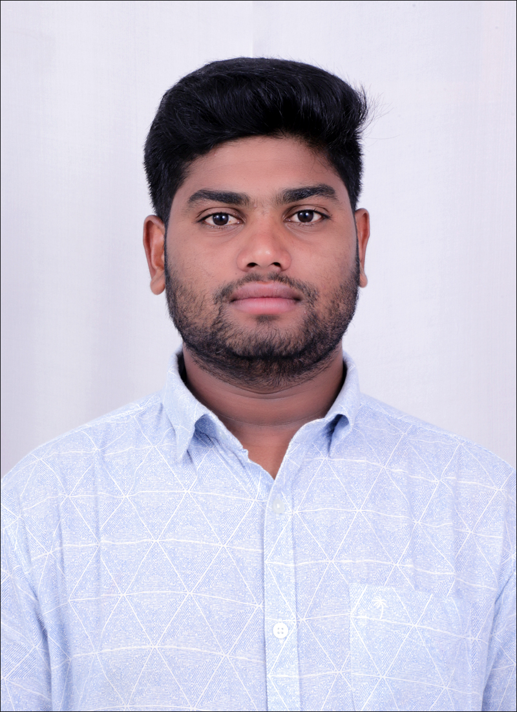

B.Tech ECE fresher with hands-on SIEM and network security practice, aiming for a career as a Cybersecurity SOC Analyst.

I'm Manoj, a final-stage Electronics and Communication Engineering student who found his passion in cybersecurity. I enjoy monitoring logs, spotting suspicious behaviour and turning raw data into clear alerts and investigations.
My goal is to join a Security Operations Center as a SOC Analyst, where I can detect, analyse and respond to threats while learning from experienced teams.
Monitoring and triage
CCNA certified
Dashboards, alerts, searches
Offense analysis
Packet analysis
Detect and investigate
Sri Venkateshwara College of Engineering
Built a Splunk dashboard to visualise log data, created alerts for suspicious activity and carried out investigations on triggered events.
SplunkAlertsInvestigationAutomated the Splunk installation and configuration process to make deployment quick, repeatable and consistent.
SplunkAutomationCisco Certified Network Associate: routing, switching and network fundamentals.
Aspiring Cybersecurity SOC Analyst · WhatsApp: +91 9160525043
B.Tech, Electronics and Communication Engineering. Sri Venkateshwara College of Engineering
SOC, SIEM, Splunk, IBM QRadar, Wireshark
Splunk dashboard, alerts and investigation; automated Splunk setup
CCNA